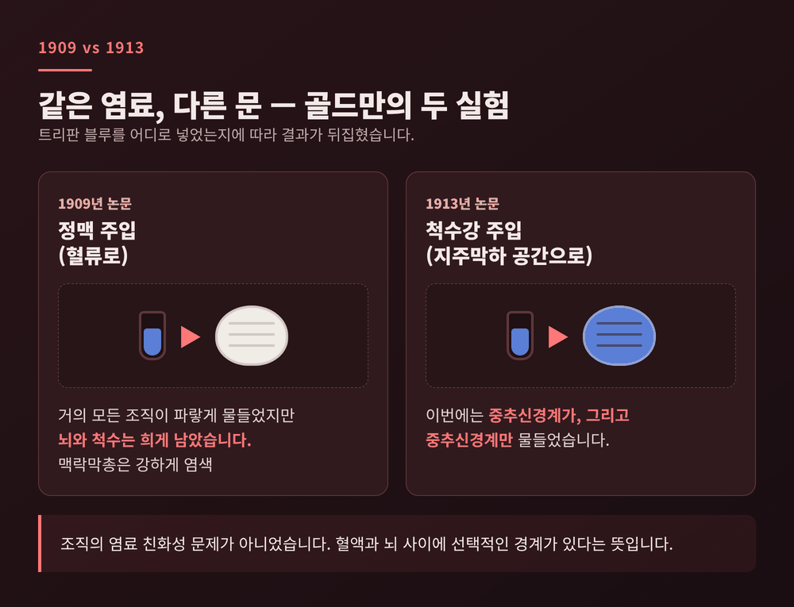
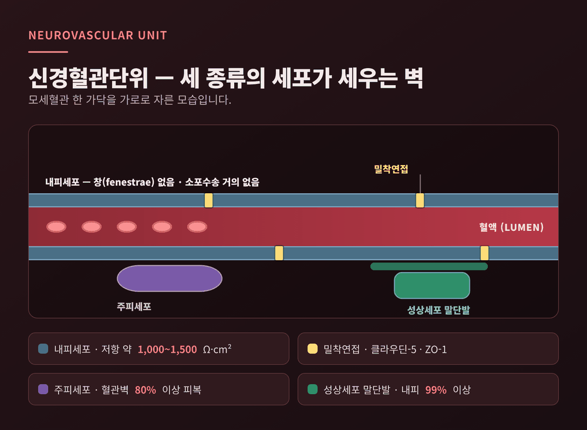
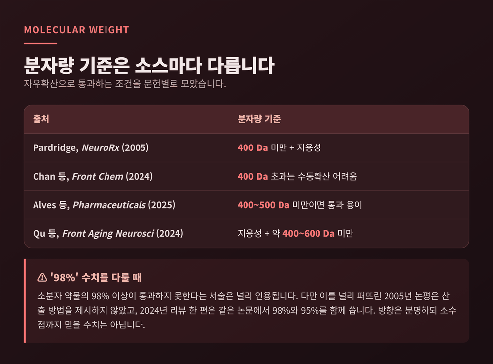
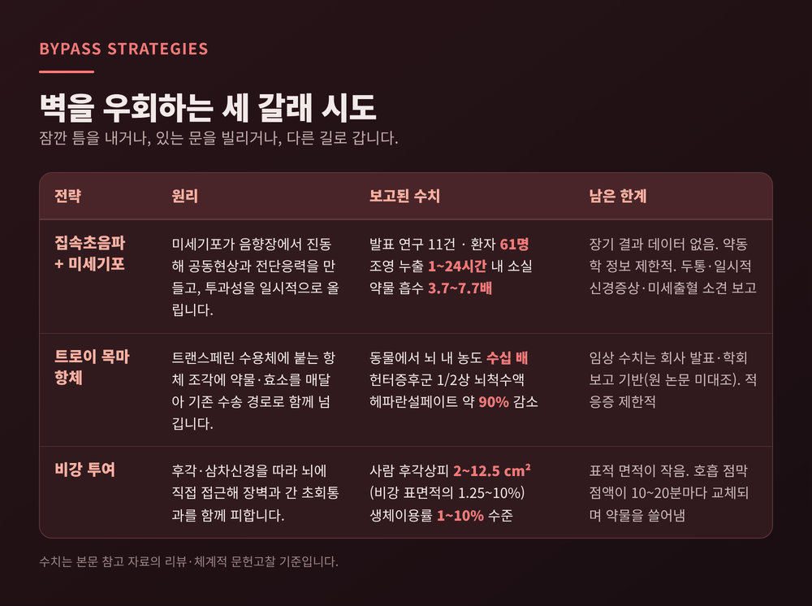
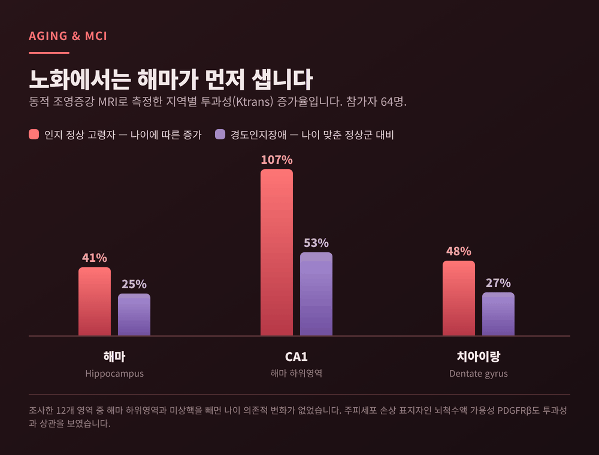

혈뇌장벽의 원리 — 뇌는 어떻게 혈액 속 독소와 약물을 걸러낼까
이번 글에서는 혈뇌장벽이 무엇을 어떻게 걸러내는지 정리해 보겠습니다. 100년 전 염료 실험에서 시작해 밀착연접 단백질과 수송체, 그리고 이 벽을 우회하려는 최근 시도까지 따라가 봅니다.
먼저 세 줄로 요약합니다.
- 혈뇌장벽은 뇌 모세혈관 내피세포 자체이며, 내피세포를 꿰맨 밀착연접과 유출펌프가 핵심 장치입니다.
- 지용성이고 분자량이 대략 400~500달톤 아래인 분자만 스스로 스며들 수 있고, 나머지는 전용 수송체를 타야 합니다.
- 그래서 뇌 약물 개발이 어렵고, 집속초음파·항체 셔틀·비강 투여 같은 우회 전략이 시도되고 있습니다.
이 글은 정보 정리이며 의학적 조언이 아닙니다. 진단과 치료는 전문가와 상의하시기 바랍니다.
■ 염료 한 방울에서 시작된 이야기
혈뇌장벽의 역사는 색을 추적한 기록입니다.
파울 에를리히는 1880년대부터 알리자린 블루-S, 인도페놀 화이트 같은 염료를 동물에 주입했습니다. 두 염료는 뇌를 파랗게 물들였지만 회색질에만 색이 들었습니다. 입자가 큰 산성 염료는 뇌를 아예 물들이지 못했습니다.
흥미로운 것은 그의 해석입니다. 에를리히는 뇌가 "가장 미세하게 다공성인" 장기라고 보았다가, 나중에는 염색 차이를 조직 자체의 염료 친화성 탓으로 돌렸습니다. 장기마다 혈관 내피가 다르다는 생각은 명시적으로 거부했습니다. 그래서 오늘날 리뷰 문헌은 그를 혈뇌장벽 현상의 "마지못한 발견자"라고 부릅니다.
결정적 실험은 그의 동료가 했습니다. 에드윈 골드만(1862~1913)은 프라이부르크에서 에를리히와 긴밀히 교류했고, 에를리히는 구하기 어려운 염료와 실험동물, 연구비까지 지원했습니다.
골드만의 두 실험은 대조가 선명합니다.
1909년 논문에서는 트리판 블루를 혈류에 주입했습니다. 거의 모든 조직이 파랗게 물들었지만 뇌와 척수는 눈처럼 희게 남았습니다. 반면 맥락막총은 강하게 염색됐습니다.
1913년 논문에서는 같은 염료를 척수강, 즉 지주막하 공간에 넣었습니다. 이번에는 중추신경계가, 그리고 중추신경계만 물들었습니다.
같은 염료인데 들어온 문이 다르면 결과가 뒤집힌 셈입니다. 조직의 친화성 문제가 아니라는 사실이 이렇게 드러났습니다.

다만 골드만 본인의 결론은 지금 교과서와 다릅니다. 그는 맥락막총이 뇌를 지키는 문지기라고 보았고, 맥락막총을 태반에 비유했습니다. 뇌혈관 자체의 보호 역할은 언급하지 않았습니다.
용어의 기원도 흔한 통념과 다릅니다. 르반도프스키가 1900년에 혈액-뇌 장벽이라는 말을 만들었다고 자주 인용되지만, 그의 논문에는 그 단어가 등장하지 않습니다. '혈액뇌장벽'에 해당하는 프랑스어 표현을 1921년경 처음 쓴 사람은 리나 스턴으로 인정됩니다. 스턴은 1934년 논문에서 장벽 기능이 물질마다 균일하지 않다고 적었습니다.
■ 장벽의 자리는 혈관 내피였다
장벽이 '어디에' 있는지는 전자현미경이 답했습니다.
1967년 리스와 카르노프스키는 생쥐에 서양고추냉이 과산화효소를 주입하고 대뇌피질 모세혈관을 관찰했습니다. 추적자는 혈관 내강과 일부 내피 미세소포에만 머물렀고, 내피를 넘지 못했습니다. 두 사람은 내피세포 사이의 밀착연접이 세포 사이 통과를 막는 원인일 것이라고 결론 내렸습니다.
예전에는 맥락막총이 문지기로 여겨졌습니다. 지금은 뇌 모세혈관 내피 그 자체가 장벽으로 이해됩니다.
■ 세 종류의 세포가 함께 세우는 벽
현재 표준 개념은 신경혈관단위입니다. 내피세포, 주피세포, 성상세포, 기저막, 뉴런이 한 단위로 묶입니다. 미세아교세포와 올리고덴드로사이트 전구세포를 포함하는 연구자도 있습니다.
뇌는 혈관이 유난히 촘촘합니다. 모든 뉴런으로부터 15마이크로미터 안에 적어도 하나의 모세혈관이 있습니다. 접촉 면적은 뇌 1.3킬로그램당 약 20제곱미터로 추정됩니다. 작은 교실 바닥만 한 면적이 두개골 안에 접혀 있는 셈입니다.
각 세포의 역할은 이렇게 나뉩니다.
- 내피세포 — 창(fenestrae)이 없고 소포수송이 거의 없습니다. 다른 장기 내피보다 미토콘드리아가 많습니다. Mfsd2a라는 단백질이 소포수송을 낮게 억제하고, 이것이 사라지면 소포수송이 늘어납니다.
- 주피세포 — 뇌 미세혈관 벽의 80퍼센트 이상을 덮고, 돌기가 미세혈관 둘레의 20~30퍼센트를 감쌉니다.
- 성상세포 말단발 — 장벽 내피의 99퍼센트 이상을 둘러쌉니다. 말단발에는 아쿠아포린-4와 Kir4.1 칼륨 채널이 있어 이온과 부피 균형을 조절합니다.

밀폐도는 전기저항으로 가늠합니다. 말초 미세혈관은 대략 2~33옴·제곱센티미터 수준인데, 뇌혈관은 약 1,000~1,500옴·제곱센티미터로 보고됩니다. 소스별로 절대치가 다르지만 수십에서 수백 배 차이라는 점은 일치합니다.
■ 클라우딘-5가 지키는 800달톤의 문
내피세포를 꿰매는 실이 밀착연접 단백질입니다.
클라우딘-5는 혈뇌장벽의 대표 표지자입니다. 뇌 내피에서 특히 풍부해, 농축 유전자 상위 50개 중 16위에 올랐습니다.
이 단백질의 역할을 가장 분명히 보여준 것은 2003년 니타 등의 결손 생쥐 실험입니다. 클라우딘-5를 없앤 생쥐의 뇌혈관은 발생과 형태가 정상이었고 출혈이나 부종도 없었습니다. 그런데 장벽이 800달톤 미만의 작은 분자에만 선택적으로 열렸습니다. 더 큰 분자는 영향을 받지 않았습니다.
문이 통째로 열린 것이 아니라, 문틈의 폭이 바뀐 것입니다.
나머지 단백질도 각자 자리를 지킵니다. 오클루딘은 약 65킬로달톤, 504개 아미노산 단백질로, 두 번째 세포외 고리가 전기저항을 주로 결정합니다. 인산화되면 ZO-1과의 결합이 약해집니다. ZO-1은 약 220킬로달톤의 비계 단백질로, 밀착연접을 액틴 세포골격에 묶어둡니다. 발현이 줄면 투과성이 올라갑니다.
접착연접도 무관하지 않습니다. VE-카드헤린 신호가 클라우딘-5 발현을 끌어올려, 두 종류의 연접이 서로 맞물려 작동합니다.
■ 들여보내는 문과 밀어내는 펌프
벽이 완전히 막혀 있다면 뇌는 굶어 죽습니다. 그래서 전용 통로가 있습니다.
GLUT1은 포도당 수송체입니다. 혈뇌장벽에서 배타적으로 발현되고 주로 기저막 쪽에 자리합니다. 뇌는 성인 체중의 약 2퍼센트에 불과하지만 개인이 소비하는 에너지의 약 25퍼센트를 씁니다. 그 연료가 이 문으로 들어옵니다.
이 문이 반만 열리면 어떻게 되는지도 알려져 있습니다. GLUT1 결핍증후군은 유전자 한 쪽의 변이로 수송체가 약 절반으로 줄어드는 병이며, 미세두증 같은 중추신경계 징후와 함께 뇌척수액 포도당이 낮게 나타납니다.
LAT1은 큰 중성 아미노산을 실어 옵니다. P-당단백질은 반대 방향으로 일합니다. 혈뇌장벽에서 가장 풍부한 ABC 수송체로, 주로 혈액 쪽 막에 붙어 들어오려는 물질을 다시 밀어냅니다. 알려진 의약품 기질이 500종을 넘습니다. 유방암내성단백질(BCRP)과 다중약물내성단백질도 같은 일을 합니다.
약을 설계하는 쪽에서 보면 성가신 구조입니다. 어렵게 막을 통과해도 펌프가 곧장 되돌려 보냅니다.
■ 400~500달톤이라는 경험칙
뇌 약물 개발의 벽은 숫자로도 표현됩니다.
자유확산으로 혈뇌장벽을 넘으려면 지용성이고 분자량이 작아야 합니다. 기준은 소스마다 조금씩 다릅니다. 400달톤 미만으로 적는 문헌이 있고, 400~500달톤 또는 400~600달톤으로 폭을 두는 문헌도 있습니다. 그래서 "약 400~500달톤"을 경험칙으로 받아들이는 편이 정확합니다.
널리 인용되는 수치도 있습니다. 소분자 약물의 98퍼센트 이상이 혈뇌장벽을 통과하지 못한다는 서술입니다. 대분자 약물이나 유전자는 거의 100퍼센트가 통과하지 못한다고 적힌 문헌도 있습니다.
다만 이 숫자는 신중하게 다뤄야 합니다. 이 수치를 처음 널리 퍼뜨린 2005년 논평은 산출 방법이나 출처를 제시하지 않았습니다. 2024년 리뷰 한 편은 같은 논문 안에서 98퍼센트와 95퍼센트를 함께 쓰고 두 숫자를 조정하지 않았습니다. 방향은 분명하지만 소수점까지 믿을 수치는 아닙니다.
수소결합 개수를 기준으로 제시하는 자료도 있지만, 혈뇌장벽에 한정한 명확한 수치 기준은 확인하지 못했습니다. 경구 생체이용률을 다루는 리핀스키의 규칙과 혼용되는 경우가 많습니다.

■ 벽을 우회하는 세 갈래 시도
벽을 허무는 대신 잠깐 틈을 내거나, 이미 있는 문을 빌리거나, 아예 다른 길로 가는 방법이 연구되고 있습니다.
집속초음파와 미세기포. 혈관에 미세기포를 넣고 초음파를 모아 쏘면, 가스가 든 입자가 음향장 안에서 진동합니다. 이 진동이 공동현상과 혈관벽 전단응력을 일으켜 장벽 투과성을 일시적으로 올립니다. 2024년 체계적 문헌고찰은 발표된 연구 11건, 환자 61명 규모를 정리했고 진행 중 시험 24건 중 2건이 3상이라고 보고했습니다. MRI 조영 누출은 장치에 따라 약 1시간에서 24시간 안에 사라졌습니다. 약물 흡수는 파클리탁셀 약 3.7배, 카보플라틴 약 5.9배, 테모졸로마이드 약 7.7배로 보고됐습니다. 다만 저자들은 장기 결과 데이터가 없고 약동학 정보도 제한적이라고 명시했습니다. 두통과 일시적 신경학적 증상, 미세출혈을 시사하는 MRI 소견도 보고됐습니다.
트로이 목마 항체. 인슐린, 렙틴, 트랜스페린 같은 대분자는 수용체 매개 트랜스사이토시스로 뇌에 들어옵니다. 이 문을 빌리자는 발상입니다. 트랜스페린 수용체에 붙는 항체 조각에 약물이나 효소를 매달아 함께 실어 보냅니다. 한 회사는 사람 IgG1의 Fc 영역을 바탕으로 셔틀을 만들고, 아미노산 아홉 개 구간을 무작위화해 효모에서 골라냈습니다. 동물 실험에서는 뇌 내 항체 농도가 일반 항체보다 수십 배 높았고, 원숭이에서 단회 투여 이틀 뒤 뇌척수액 지표가 크게 떨어졌다가 2주 만에 돌아왔습니다. 헌터증후군 환자를 대상으로 한 1/2상에서는 뇌척수액 헤파란설페이트가 약 90퍼센트 감소했다고 보고됐습니다. 다만 이 임상 수치는 회사 발표와 학회 보고를 전한 전문 매체 기사로 확인한 것이며, 원 논문과 규제기관 문서를 직접 대조하지는 못했습니다.
비강 투여. 후각신경과 삼차신경을 따라가면 혈뇌장벽과 간 초회통과를 모두 피할 수 있습니다. 상피 경로는 특히 빨라서 수 분 안에 후구에 닿는다고 보고됩니다. 그런데 사람에게는 해부학적 제약이 큽니다. 사람의 후각상피는 2~12.5제곱센티미터로 비강 전체 표면적의 약 1.25~10퍼센트에 그칩니다. 호흡 점막의 점액은 10~20분마다 교체되어 약물을 쓸어 내립니다. 친수성 약물의 생체이용률은 분자량이 커질수록 떨어져 통상 1퍼센트 미만에서 10퍼센트 수준에 머뭅니다.

세 전략 모두 아직 완성형은 아닙니다. 벽을 잠시 여는 쪽은 안전성과 장기 데이터가 남았고, 문을 빌리는 쪽은 적응증이 제한적이며, 다른 길로 가는 쪽은 사람의 해부학이 걸림돌입니다.
■ 노화와 질환에서는 해마가 먼저 샙니다
이 벽은 평생 그대로 있지 않습니다.
2015년 연구는 참가자 64명을 동적 조영증강 MRI로 조사했습니다. 인지가 정상인 고령자에서도 나이와 함께 투과성이 올라간 영역이 있었습니다. 해마가 41퍼센트, CA1이 107퍼센트, 치아이랑이 48퍼센트였습니다. 조사한 12개 영역 가운데 해마 하위영역과 미상핵을 빼면 나이 의존적 변화가 없었습니다.
경도인지장애 환자는 나이를 맞춘 정상군보다 더 높았습니다. 해마 25퍼센트, CA1 53퍼센트, 치아이랑 27퍼센트였습니다. 주피세포 손상 표지자인 뇌척수액 가용성 PDGFRβ도 투과성과 상관을 보였습니다.
알츠하이머병에서는 결과가 갈립니다. 뇌척수액과 혈청의 알부민 지수를 쓴 연구 10건을 검토한 결과, 6건은 장벽 손상을 발견했고 4건은 발견하지 못했습니다. 한 연구에서는 경증~중등도 환자 36명 중 22퍼센트에서 알부민 지수가 비정상이었습니다. 표본이 매우 작은 연구도 섞여 있습니다. 결론을 내리기에는 이르다고 보는 편이 정직합니다.
뇌졸중에서는 장벽이 두 번에 걸쳐 열립니다. 1차는 발병 약 6시간 안에, 2차는 약 72~96시간 안에 일어나고, 투과성 상승은 수 주간 이어질 수 있습니다. 허혈은 클라우딘-5 발현을 줄이고, 기질금속단백분해효소가 세포외기질을 분해하며 ZO-1을 떨어뜨립니다.
주피세포 피복 감소는 노화, 당뇨, 고혈압, 녹내장, 염증, 알츠하이머병과 연관됩니다. 다만 주피세포가 왜 떨어져 나가고 죽는지는 아직 잘 모른다고 연구자들이 직접 밝히고 있습니다.

덧붙여 바로잡고 싶은 통념이 하나 있습니다. 신생아와 태아의 혈뇌장벽은 미성숙해서 새어 나온다는 말이 오래 돌았습니다. 리뷰 문헌은 이 믿음의 근거가 약하다고 지적합니다. 태아에서도 장벽이 온전하다는 보고가 1910~1920년대에 이미 있었고, 미성숙설의 근거로 자주 인용되는 1927년 연구는 그것을 분명히 보이지 못했습니다. 과거 실험에서 보인 '누출'은 염료가 알부민에 결합하는 성질을 놓쳤거나, 과도한 용량으로 혈관을 기계적으로 다친 결과였을 가능성이 큽니다.
정리하면 이렇습니다. 혈뇌장벽은 벽돌담이 아니라 선택적인 검문소입니다. 밀착연접이 세포 사이를 꿰매고, 수송체가 필요한 것을 들이고, 유출펌프가 나머지를 되돌려 보냅니다.
— 뇌를 지키는 구조가 곧 뇌를 치료하기 어렵게 만드는 구조라는 것이, 이 분야의 가장 오래된 역설입니다.
100년 전 눈처럼 희게 남은 토끼의 뇌 한 조각이 아직도 질문을 던지고 있다면, 그 질문은 여전히 유효하다고 답하겠습니다.
참고 자료
- Saunders NR 등, "The rights and wrongs of blood-brain barrier permeability studies: a walk through 100 years of history", Frontiers in Neuroscience 8:404 (2014) — https://www.frontiersin.org/journals/neuroscience/articles/10.3389/fnins.2014.00404/full
- "Edwin Ellen Goldmann (1862–1913)" 전기 논문 — https://pmc.ncbi.nlm.nih.gov/articles/PMC10129987/
- Reese TS, Karnovsky MJ, "Fine structural localization of a blood-brain barrier to exogenous peroxidase", J Cell Biol 34(1):207–217 (1967) — https://rupress.org/jcb/article/34/1/207/16962/FINE-STRUCTURAL-LOCALIZATION-OF-A-BLOOD-BRAIN
- Nitta T 등, "Size-selective loosening of the blood-brain barrier in claudin-5-deficient mice", J Cell Biol 161(3):653–660 (2003) — https://rupress.org/jcb/article/161/3/653/33647/Size-selective-loosening-of-the-blood-brain
- Redzic Z, "Molecular biology of the blood-brain and the blood-cerebrospinal fluid barriers", Fluids and Barriers of the CNS 8:3 (2011) — https://fluidsbarrierscns.biomedcentral.com/articles/10.1186/2045-8118-8-3
- Xue S 등, "Stroke-induced damage on the blood–brain barrier", Frontiers in Neurology 14:1248970 (2023) — https://www.frontiersin.org/journals/neurology/articles/10.3389/fneur.2023.1248970/full
- Pardridge WM, "The blood-brain barrier: bottleneck in brain drug development", NeuroRx 2(1):1–2 (2005) — https://link.springer.com/content/pdf/10.1602%2Fneurorx.2.1.1.pdf
- Qu Z 등, "Advancements in strategies for overcoming the blood–brain barrier to deliver brain-targeted drugs", Frontiers in Aging Neuroscience 16:1353003 (2024) — https://www.frontiersin.org/articles/10.3389/fnagi.2024.1353003/full
- Alves PA 등, "Computational Modeling of Pharmaceuticals with an Emphasis on Crossing the Blood–Brain Barrier", Pharmaceuticals 18(2):217 (2025) — https://www.mdpi.com/1424-8247/18/2/217
- Chan BWGL 등, "Fragment-based drug discovery for disorders of the central nervous system", Frontiers in Chemistry 12:1379518 (2024) — https://www.frontiersin.org/journals/chemistry/articles/10.3389/fchem.2024.1379518/full
- Zhu H 등, "Focused ultrasound-mediated enhancement of blood–brain barrier permeability for brain tumor treatment: a systematic review of clinical trials", Journal of Neuro-Oncology (2024) — https://link.springer.com/article/10.1007/s11060-024-04795-z
- "Nose-to-brain delivery" 리뷰, European Journal of Pharmaceutics and Biopharmaceutics 128:337–362 (2018) — https://zenodo.org/record/1256646/files/EJPB_128_337-362_2018.pdf
- Montagne A 등, "Blood-Brain Barrier Breakdown in the Aging Human Hippocampus", Neuron (2015) — https://pubmed.ncbi.nlm.nih.gov/25611508/
- Ott BR 등, "Blood-Cerebrospinal Fluid Barrier Gradients in Mild Cognitive Impairment and Alzheimer's Disease", Frontiers in Aging Neuroscience 10:245 (2018) — https://www.frontiersin.org/journals/aging-neuroscience/articles/10.3389/fnagi.2018.00245/full
- Tang M, Monani UR, "Glut1 deficiency syndrome", Neuroscience Insights (2021) — https://journals.sagepub.com/doi/full/10.1177/26331055211011507
- Chagnot A, Montagne A, "Walking on the tightrope: the shared roles of the bridging pericytes in the brain", Frontiers in Cellular Neuroscience 19:1615579 (2025) — https://www.frontiersin.org/journals/cellular-neuroscience/articles/10.3389/fncel.2025.1615579/full
- Alzforum, "Molecular Transport Vehicle Shuttles Therapies into Brain" (2020) — https://alzforum.org/node/1359471
#혈뇌장벽 #BBB #신경혈관단위 #클라우딘5 #뇌약물전달 #집속초음파 #뇌과학 #바이오